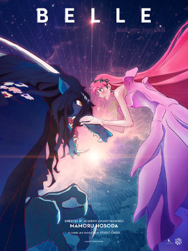
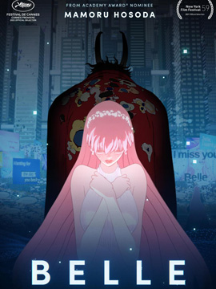
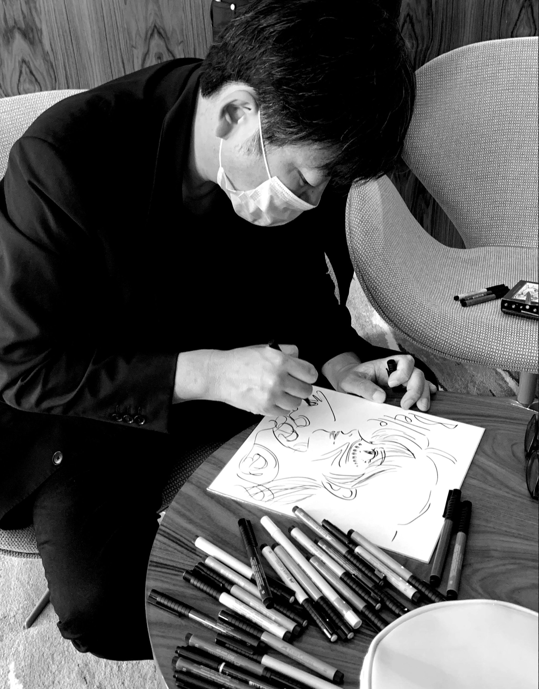
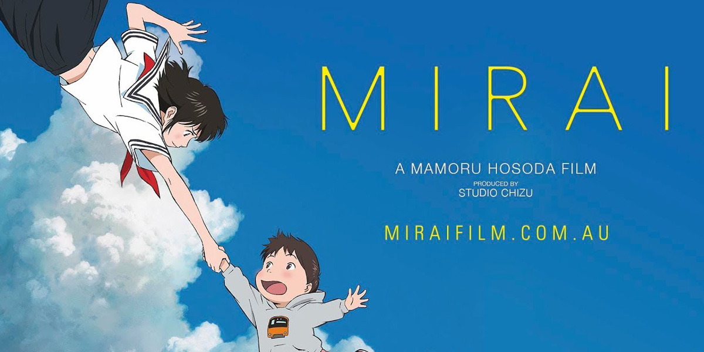
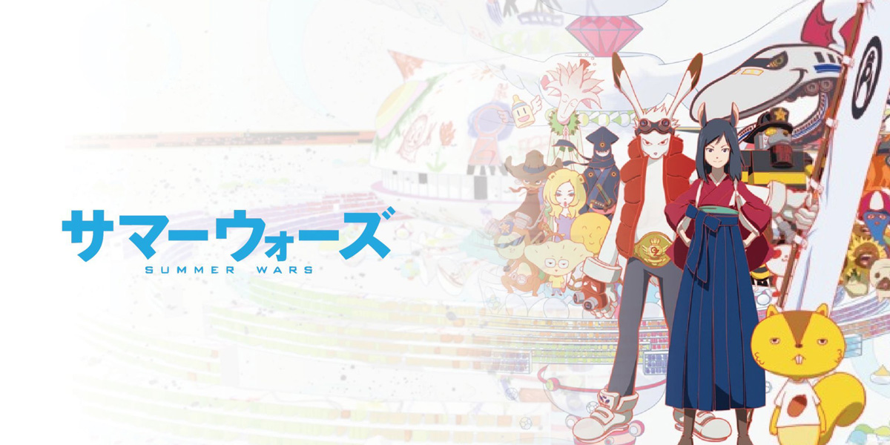
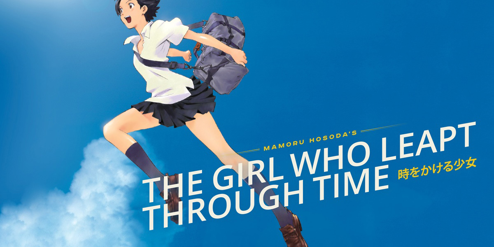

ABOUT
About
Belle (竜とそばかすの姫, Ryū to Sobakasu no Hime, literally The Dragon and the Freckled Princess) is a 2021 Japanese animated science fantasy film written and directed by Mamoru Hosoda and produced by Studio Chizu. The story is inspired by the 1756 French fairy tale Beauty and the Beast by Jeanne-Marie Leprince de Beaumont as well as the 1991 Disney animated film.
Belle premiered on July 15, 2021, at the 2021 Cannes Film Festival, where it was well-received by critics with a standing ovation that lasted fourteen minutes. The film was additionally dubbed into foreign languages (English, Portuguese Spanish, Italian, French and German). It was released theatrically in Japan on July 16, 2021. GKIDS has licensed the film in North America, with a nationwide release date of January 14, 2022, and previews in select IMAX theaters on January 12, while Anime Limited released the film in the United Kingdom on February 4, 2022.
Belle is the third-highest-grossing Japanese film of 2021, accounting for ¥6.53 billion in box-office rakings as of December 12, 2021.
-

-

-

Plot
Teenager Suzu Naito lives in the rural Kōchi Prefecture of Japan with a lost passion for singing and writing songs. When Suzu was young, she witnessed her mother rescue a child from a flooding river at the cost of her own life, causing her to resent her mother for "abandoning" her for a stranger's child and eventually grow distant from her father.
Urged by Hiro, Suzu signs into the popular virtual metaverse "U" and is appointed a beautiful avatar with freckles (through the AI engine's biometric analysis) whom she names "Bell", the English translation of her own name. Upon logging into U, she finds herself capable of singing again. With the assistance of Hiro, who has appointed herself Bell's manager and producer, Bell almost immediately becomes a best-seller on U's music charts, and people start to refer to her as "Belle", meaning "beautiful" in French.
Production
Director MAMORU HOSODA
He was born in 1967.In 1991, he joined Toei Animation (now Toei Animation) and worked as an animator and became a director.In 1999, he made his debut as a film director in "Theatrical Digimon Adventure."After that, she became a freelancer and directed "Girls Who Spend Time" and "Summer Wars," attracting attention both at home and abroad.In 2011, he established his own animation film production company, Studio Map, and directed, wrote, and wrote the original work together with "Okami Kodomo no Rain and Snow" and "Bakemono no Ko."The latest film, Mirai of the Future (director, screenplay, and original), was nominated for Best Animated Feature Film at the 91st U.S. Academy Awards and 76th Golden Globe Awards, and won Best Independent Animation Film at the 46th Annie Awards.
- 
- 
- 